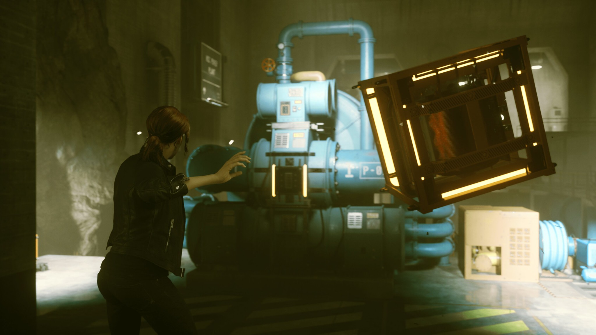
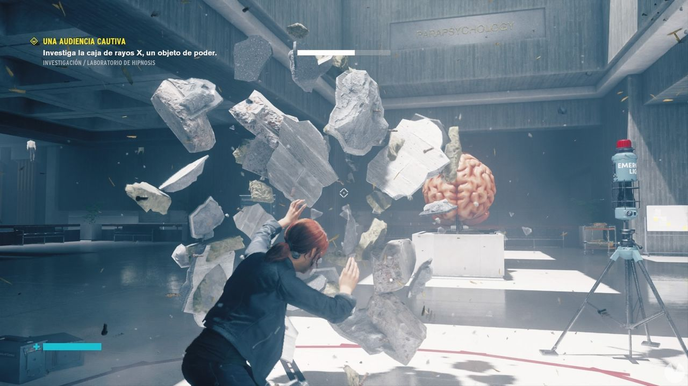
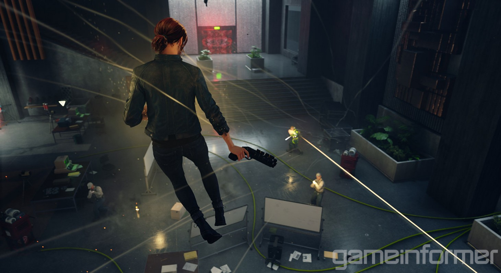

CONTROL

Lanzar
- ¿Cómo se consigue?: se desbloquea como parte de la historia obligatoriamente durante la misión Llamada desconocida, después de purgar el objeto de poder que hay en la zona de Neumáticos.
- ¿Para qué sirve?: este poder es como la telequinesis, con él Jesse puede recoger casi cualquier objeto de los escenarios para luego lanzarlo con fuerza hacia un punto. Es realmente útil para dañar a los enemigos o incluso para avanzar en algunos escenarios bloqueados.
- Cómo mejorarlo: este poder se puede mejorar desde el árbol de habilidades para desbloquear la opción de lanzar a enemigos ligeros o pesados o incluso devolver sus explosivos.
Evadir
- ¿Cómo se consigue?: debe desbloquearse completando la misión secundaria Una alegre persecución, que se activa en la Sala de descanso que hay cerca de la Oficina del conserje, en el Sector de mantenimiento (se puede obtener a partir de la misión Anulación manual).
- ¿Para qué sirve?: es como un dash, te permite extender la distancia de tus saltos o moverte rápidamente hacia cualquier dirección para esquivar enemigos, explosiones, etcétera.

Escudo
- ¿Cómo se consigue?: debe desbloquearse completando la misión secundaria Una buena defensa, que se activa al recoger Pruebas con la caja fuerte, un coleccionable de Investigación y registros del Sector de mantenimiento. La misión se lleva a cabo en la zona del Entrenamiento de campo (se puede obtener a partir de la misión Anulación manual).
- ¿Para qué sirve?: Jesse levanta un escudo protector frente a su posición que la protege de todos los daños que recibe. Muy útil para cubrirse de disparos o explosiones.
- Cómo mejorarlo: este poder se puede mejorar desde el árbol de habilidades para desbloquear la opción de devolver todo el daño acumulado en el escudo a nuestros enemigos.
Dominar
- ¿Cómo se consigue?: debe desbloquearse completando la misión secundaria Una audiencia cautiva, que se activa al recoger Información sobre astralnautas, un coleccionable de Investigación y registros del Sector de investigación. La misión se lleva a cabo en la sala del Laboratorio de hipnosis (se puede obtener a partir de la misión Club tradicional).
- ¿Para qué sirve?: permite a Jesse controlar las mentes de los enemigos Hiss, de manera que estos se volverán aliados y combatirán por nosotros y nos ayudarán.
- Cómo mejorarlo: este poder se puede mejorar desde el árbol de habilidades para dominar a los enemigos durante más tiempo y también para desbloquear la opción de dominar a un enemigo extra o enemigos pesados.

Levitar
- ¿Cómo se consigue?: se desbloquea como parte de la historia obligatoriamente durante la misión Guardiana de mi hermano, después de purgar el objeto de poder que hay en la zona de Pasadizo retorcido.
- ¿Para qué sirve?: te permite volar durante unos segundos, lo que es muy útil para alcanzar nuevas zonas de los escenarios o combatir más ágilmente.
- Cómo mejorarlo: este poder se puede mejorar desde el árbol de habilidades para poder levitar durante más segundos y también para desbloquear el movimiento de Onda de impacto, que te permite caer con fuerza sobre el suelo para dañar a los enemigos cercanos.